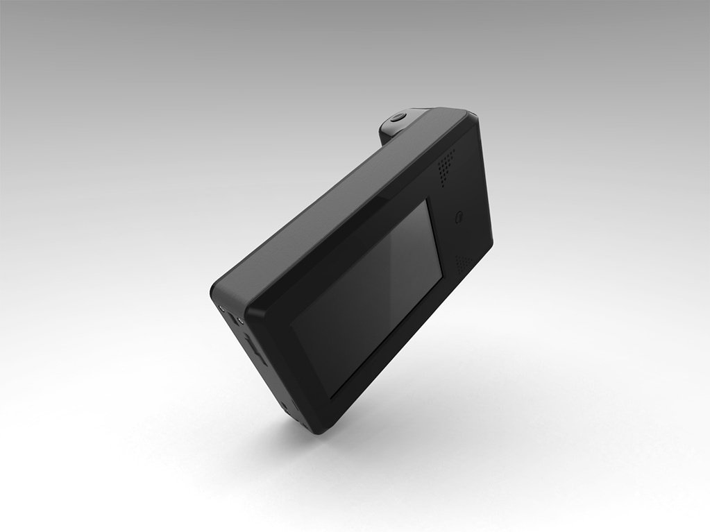
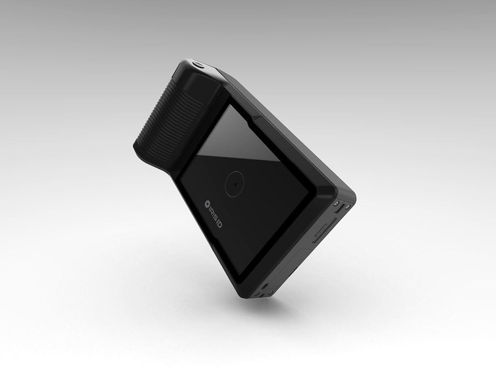

iCAM H100 — Portable Iris Recognition Camera
Product design of a portable iris recognition camera for Iris ID Systems.
Overview
Industrial design of the iCAM H100 — a fully portable handheld iris recognition camera designed for field operations and law enforcement use.
Views
- Front view — capture optics & LED indicators
- Rear view — display, controls & battery housing


Previous
← iCAM TD100
Next
—